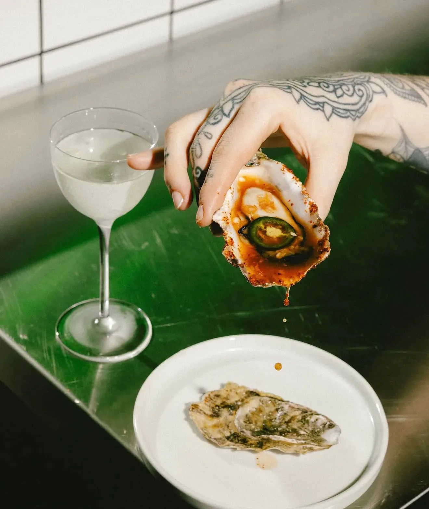
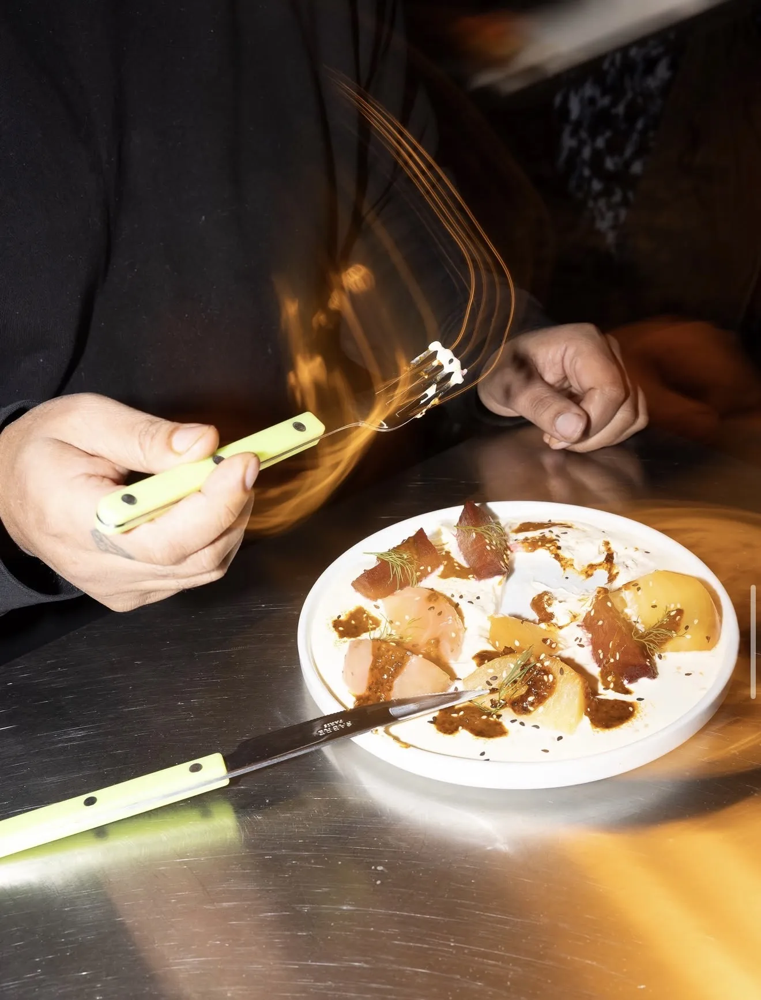
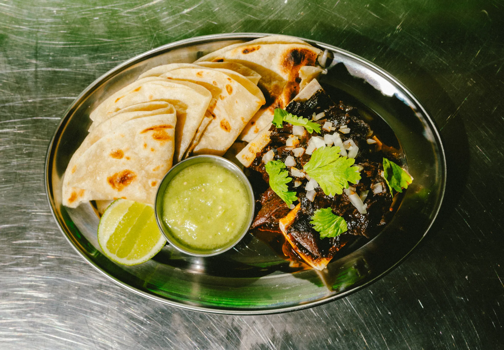

Perro — neighbourhood restaurant & bar, Kings Heath
Neighbourhood restaurant & bar
Mexican influenced
Mexican influenced
Tues to Sat 1800-LATE -
Sat Brunch 1100-1400
Kings court, kings heath, B14 7JZ
Sat Brunch 1100-1400
Kings court, kings heath, B14 7JZ
[ Info ]
Sharing plates, strong margaritas and
Mexican-leaning flavours in the heart
of Kings Heath.
[ Social ]


